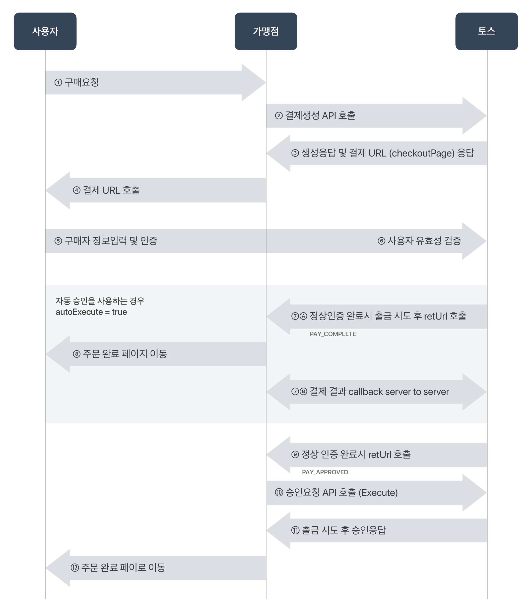
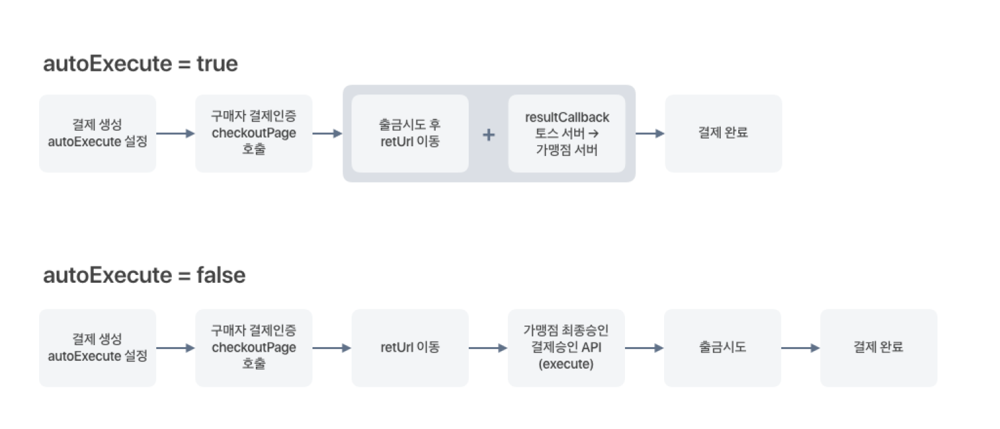

토스는 결제만큼 연동도 간단합니다. 연동 전 아래 그림을 참고하시면 이해가 쉽습니다. 
먼저 계약 문의를 통해 가맹점 가입을 신청합니다. 가입 승인이 완료되면 가맹점 계정이 발급되고, 가맹점 관리자에 로그인하여 상점을 관리할 수 있습니다.
토스 가맹점 관리자에 로그인하면 '토스몰'의 API Key를 확인할 수 있습니다. (발급받은 API Key는 '가맹점 관리자 > 상점 정보'에서 확인할 수 있습니다)
발급된 상점 API Key는 결제 생성 / 환불 등 모든 거래에서 인증 수단으로 활용합니다.
API Key가 외부에 유출되면 원치않는 결제 생성이나 환불 처리가 발생하여 금전적인 손실이 발생할 수 있습니다. API key가 웹사이트에 노출되거나 외부인에게 유출되지 않도록 주의해주세요.
발급되는 API Key는 두 가지입니다. (테스트용 / 실거래용) 두 Key는 아래와 같은 차이가 있습니다.
*주의*
테스트가 완료되면 운영 오픈 전 반드시 '실 거래용 Key'로 변경 후 체크해주세요!
테스트용 Key로 서비스를 오픈하게 되는 경우, 고객의 결제는 성공했으나 가맹점에서는 금액을 받지 못한채로 무료 서비스를 제공하게 되는 위험이 있으니 반드시 확인해 주셔야 합니다.
고객은 토스몰을 둘러보다가 35,000원짜리 '토스 티셔츠'를 선택하여 결제를 요청합니다. 이 때 토스몰은 토스 결제 서버에게 '결제 생성'을 요청해야합니다. 결제 생성 API를 호출하세요.
고객의 결제는 아래와 같이 요청합니다.
curl https://pay.toss.im/api/v1/payments \ -H "Content-Type: application/json" \ -d '{ "orderNo":"1", "amount":35000, "amountTaxFree":0, "productDesc":"토스티셔츠", "apiKey":"sk_test_apikey1234567890", "autoExecute":true, "resultCallback":"http://YOUR-SITE.COM/callback", "retUrl":"http://YOUR-SITE.COM/ORDER-CHECK", "retCancelUrl":"http://YOUR-SITE.COM/close" }'import java.nio.charset.StandardCharsets; URL url = null; URLConnection connection = null; StringBuilder responseBody = new StringBuilder(); try { url = new URL("https://pay.toss.im/api/v1/payments"); connection = url.openConnection(); connection.addRequestProperty("Content-Type", "application/json"); connection.setDoOutput(true); connection.setDoInput(true); org.json.simple.JSONObject jsonBody = new JSONObject(); jsonBody.put("orderNo", "2015072012211"); jsonBody.put("amount", 35000); jsonBody.put("amountTaxFree", 0); jsonBody.put("productDesc", "토스티셔츠"); jsonBody.put("apiKey", "sk_test_apikey1234567890"); jsonBody.put("autoExecute", true); jsonBody.put("resultCallback", "http://YOUR-SITE.COM/callback"); jsonBody.put("retUrl", "http://YOUR-SITE.COM/ORDER-CHECK"); jsonBody.put("retCancelUrl", "http://YOUR-SITE.COM/close"); BufferedOutputStream bos = new BufferedOutputStream(connection.getOutputStream()); bos.write(jsonBody.toJSONString().getBytes(StandardCharsets.UTF_8)); bos.flush(); bos.close(); BufferedReader br = new BufferedReader(new InputStreamReader(connection.getInputStream(), StandardCharsets.UTF_8)); String line = null; while ((line = br.readLine()) != null) { responseBody.append(line); } br.close(); } catch (Exception e) { responseBody.append(e); } System.out.println(responseBody.toString());$arrayBody = array(); $arrayBody["orderNo"] = "2015072012211"; $arrayBody["amount"] = 10000; $arrayBody["amountTaxFree"] = 0; $arrayBody["productDesc"] = "토스티셔츠"; $arrayBody["apiKey"] = "sk_test_apikey1234567890"; $arrayBody["autoExecute"] = true; $arrayBody["resultCallback"] = "http://YOUR-SITE.COM/callback"; $arrayBody["retUrl"] = "http://YOUR-SITE.COM/ORDER-CHECK"; $arrayBody["retCancelUrl"] = "http://YOUR-SITE.COM/close"; $jsonBody = json_encode($arrayBody); $ch = curl_init('https://pay.toss.im/api/v1/payments'); curl_setopt($ch, CURLOPT_CUSTOMREQUEST, "POST"); curl_setopt($ch, CURLOPT_SSL_VERIFYPEER, false); curl_setopt($ch, CURLOPT_POSTFIELDS, $jsonBody); curl_setopt($ch, CURLOPT_RETURNTRANSFER, true); curl_setopt($ch, CURLOPT_HTTPHEADER, array( 'Content-Type: application/json', 'Content-Length: ' . strlen($jsonBody)) ); $result = curl_exec($ch); curl_close($ch); echo "Response: ".$result;
위 예제에서 알 수 있듯이 '결제 생성'을 위해서는 9가지 설정값을 담아 토스에 요청해야합니다.
앞서 말씀 드렸듯, API Key는 절대 유출되어선 안됩니다.
결제 요청 내용이 웹페이지에 그대로 드러나지 않게 다시 한번 주의해주세요!
요청하신 결제 생성이 무사히 완료되면, 토스는 아래와 같이 응답합니다.
{"code":0,"checkoutPage":"https://pay.toss.im/payfront/auth?payToken=test_token1234567890",
"payToken":"test_token1234567890"}code '0'은 결제 생성에 '성공'했음을 나타냅니다.
checkoutPage는 생성된 결제를 진행할 웹페이지 URL입니다. (구매자를 이 URL로 보내주세요)
payToken 값은 생성된 결제건의 고유번호입니다. 결제를 진행할 때, 결제를 취소하거나 환불할 때, 결제의 현재 상태를 파악할 때 이 고유번호를 통해 해당 결제 건에 접근하게 되니 잘 보관해주세요!
토스 결제 진행은 간단합니다. 결제 생성 시 응답으로 받은 'checkoutPage' URL로 구매자를 보내주시기만 하면 됩니다.
위 예제의 checkoutPage는 아래와 같습니다. (매 결제마다 다른 URL이 발급됩니다)
https://pay.toss.im/payfront/auth?payToken=test_token1234567890
구매자는 호출된 토스 화면을 통해 결제 수단을 선택한 후 결제를 진행할 수 있습니다.
그 후, 결제 인증까지의 모든 과정은 토스가 알아서 해드립니다. (토스머니를 선택했다면 계좌 유효성 검증 후 충전의 단계를 거치고,
토스카드를 선택했다면 카드 소유자의 일치 여부를 확인하고 카드 추가부터 진행할 수 있습니다)
토스 앱과 토스 서버 간의 통신이 이루어지므로 가맹점에서는 추가 개발하거나 수정해야 되는 부분이 없습니다.
올바른 URL로 연결하셨다면 고객은 아래와 같은 화면을 통해 결제를 진행하게 됩니다.

Tip. 가맹점에서 구현하고자 하는 결제창의 유형을 먼저 알려주세요!
토스 서버가 기억하고 가맹점에 맞는 브릿지 페이지를 호출합니다.
예를 들어, 토스몰에서 “토스 앱으로 결제” 만 원하는 경우 구매자는 앱 결제만 선택 가능하고,
“웹/앱 둘다 선택” 하는 경우 구매자가 직접 결제 유형을 선택해서 진행할 수 있습니다.
* 토스 카드 이용을 위해서는 앱 결제는 필수이며, 웹 결제의 경우 협의 후 이용 가능합니다.
아래 그림과 같이, 고객이 결제 암호를 잘 입력하면 구매자 인증이 완료됩니다. 그러면 토스는 결제 생성 시
넘겨주신 'retUrl'로 고객을 보내드립니다.

retUrl로 고객을 보내면서, 인증 결과 (status) 와 함께 주문 번호 (orderNo), 결제수단(payMethod) 을 query string 파라미터로 함께 보내드립니다. 예시는 다음과 같습니다.
http://YOUR-SITE.COM/ORDER-CHECK?status=PAY_COMPLETE&orderNo=1&payMethod=TOSS_MONEY 여기서 status 값을 확인해주세요.
결제를 취소한 경우에는 결제 취소 안내 화면을 보여주시고, 인증을 완료한 경우에는 결제 완료 화면을 보여주세요.
결제 생성 요청에 대해 좀 더 자세히 알아봅니다. 아래 예제는 결제 생성 API가 지원하는 모든 파라미터를 사용한 코드입니다.
curl https://pay.toss.im/api/v1/payments \
-H "Content-Type: application/json" \
-d '{
"orderNo":"1", # 토스몰 고유의 주문번호 (필수)
"amount":35000, # 결제 금액 (필수)
"amountTaxFree":0, # 비과세 금액 (필수)
"productDesc":"토스티셔츠", # 상품 정보 (필수)
"apiKey":"sk_test_apikey1234567890", # 상점의 API Key (필수)
"retUrl":"http://YOUR-SITE.COM/ORDER-CHECK?orderno=1", # 결제 완료 후 연결할 웹 URL (필수)
"retCancelUrl":"http://YOUR-SITE.COM/close", # 결제 취소 시 연결할 웹 URL (필수)
"autoExecute":true, # 자동 승인 설정
"resultCallback":"http://YOUR-SITE.COM/callback", # 결제 결과 callback 웹 URL (필수-자동승인설정 true의 경우)
"amountTaxable":22727, # 결제 금액 중 과세금액
"amountVat":2273, # 결제 금액 중 부가세
"amountServiceFee":0, # 결제 금액 중 봉사료
"expiredTime":"2019-04-01 12:47:35", # 결제 만료 예정 시각
"cashReceipt":true, # 현금영수증 발급 가능 여부
"metadata":"{'size':'XL','color':'Red'}" # metadata 값
}'결제 생성 요청 시 반드시 아래 9가지 값을 함께 보내주셔야합니다.
이 파라미터를 통해 '결제 생성 후, 언제까지 결제 승인을 진행할 수 있는지' 설정할 수 있습니다. '결제 대기' 상태인 결제건의 만료 기한이 도래하면 토스 서버에서 자동으로 결제를 취소합니다.
상점 혹은 판매 물품에 특성에 따라 결제 만료 기간을 길게 혹은 짧게 설정할 수 있습니다.
결제 만료 기한은 최대 1시간이며, 따로 설정하지 않는 경우 15분으로 설정됩니다.
현금영수증 발급 가능 여부를 설정할 수 있습니다.
카드결제 혹은 문화상품권이나 백화점상품권, 모바일 쿠폰 등 과세 대상에서 제외되는 유가증권 등의 상품은
현금영수증 발행이
불가하며, 토스 머니(현금성) 결제건에 한하여 현금영수증 발행이 가능합니다.
토스 결제는 기본적으로 '구매자'의 인증이 완료되면 바로 출금을 시도하고 결제를 완료시킵니다.
하지만, 재고 상황이 빠르게 변하는 경우나 서비스 흐름 상 결제를 '최종 승인'하는 주체가 가맹점이어야 하는 경우가 있습니다.
그럴땐 아래 두 가지 조치를 통해 대응할 수 있습니다.
아래 그림을 참고하세요. 
생성하는 결제 건과 연관된 추가적인 데이터가 있다면 이 파라미터를 활용하여 저장해둘 수 있습니다. (결제가 완료될 때 보내드리는 callback에 여기에 저장해준 데이터를 함께 보내드립니다)
전체 결제 금액 중 '비과세' 처리해야할 금액이 섞여있거나 부가세, 봉사료 비중을 원하는대로 설정하고 싶다면 결제 생성 시 '복합과세' 파라미터를 이용하세요.
위 네 가지 값 중 하나라도 0이 아닌 값으로 설정하면 해당 결제 건은 '복합과세' 결제로 처리되며, 네 가지 값의
합은 총 결제 금액(amount)과 반드시 동일해야합니다. (동일하지 않거나 빈 값으로 전달할 경우 에러 발생)
위 파라미터를 통해 설정한 값은 현금 영수증 발행 시 그대로 반영됩니다.
위 파라미터 값을 설정하지 않는 경우, 자동으로 아래와 같이 처리됩니다.
단, 현금영수증 발행 불가 결제(cashReceipt = false)인 경우, 아래와 같이 처리됩니다.
결제가 아직 완료되지 않은 '대기' 상태에서 결제를 취소할 수 있습니다. 아래 예제는 결제 취소 API가 지원하는 모든 파라미터를 사용한 코드입니다.
curl "https://pay.toss.im/api/v1/cancel" \
-H "Content-Type: application/json" \
-d '{
"apiKey":"sk_test_apikey1234567890", # 상점의 API Key (필수)
"payToken":"test_token1234567890", # 결제 고유 번호 (필수)
"reason":"재고 부족" # 취소 사유
}'
필수 파라미터는 딱 2가지 입니다. '어느 가맹점'에서 '어떤 결제건'을 취소하는지만 알려주세요!
결제 취소 사유를 기록해야한다면 이 파라미터를 활용하세요. 최대 50자까지 남길 수 있습니다. (string)
구매자도 결제를 취소할 수 있습니다. 이에 대응하기 위해 결제 생성 시 retCancel URL을 등록하고, '취소'가 발생한 경우 적절한 처리를 해주세요. (주문 상태 변경 등)
결제 완료 건의 결제 금액 중 일부 또는 전부를 구매자에게 돌려줍니다.
환불 요청에 성공하는 즉시,
토스 머니로 결제된 거래건은 구매자의 계좌로 요청하신 금액이 입금되며,
토스 카드로 결제된 거래건은 승인취소 됩니다. 환불한 금액은 상점의 다음 정산에 반영됩니다.
아래 예제는 결제 환불 API가 지원하는 모든 파라미터를 사용한 코드입니다.
curl "https://pay.toss.im/api/v1/refunds" \
-H "Content-Type: application/json" \
-d '{
"apiKey":"sk_test_apikey1234567890", # 상점의 API Key (필수)
"payToken":"test_token1234567890", # 결제 고유 번호 (필수)
"amount":10000 # 환불할 금액 (필수)
"amountTaxable":5000, # 환불할 금액 중 과세금액
"amountTaxFree":4000, # 환불할 금액 중 비과세금액 (필수)
"amountVat":500, # 환불할 금액 중 부가세
"amountServiceFee":500, # 환불할 금액 중 봉사료
}'
'결제 취소'와 필수 파라미터는 4가지 입니다. '어느 가맹점'에서 '어떤 결제건'을 환불하는지만 알려주세요!
총 결제 금액 중 일부만 환불하고자 하는 경우, 이 파라미터 값을 설정해주세요. 금액을 설정하지 않으면 결제 금액 전액을 환불합니다.
결제 생성 시, 세부 금액 구성(과세금액/비과세금액/부가세/봉사료)을 지정했다면, 환불 요청 시에도 반드시 어떤 부분에서 환불 처리할지 지정해야 합니다.
환불 요청하는 금액은 '남은 결제 금액'보다 작거나 같아야 하고, 환불할 세부 금액들의 총합은 반드시 전체 환불 금액(amount)과 동일해야 합니다. (다를 시 에러 발생)
결제가 생성되고 진행됨에 따라 결제의 '상태'는 끊임없이 바뀝니다. 상점 운영을 위해선 특정 결제건이 현재 어떤 상태인지 파악할 일이 많을 것입니다. 결제가 잘 끝난 것인지, 취소된 것은 아닌지. 환불 요청에 들어왔던 주문은 잘 환불 되었는지...
그럴땐 망설이지 말고 '결제 상태 확인 API'를 찾아주세요. 아래 예제는 결제 상태 확인 API 호출 코드입니다.
curl "https://pay.toss.im/api/v1/status" \
-H "Content-Type: application/json" \
-d '{
"apiKey":"sk_test_apikey1234567890", # 상점의 API Key (필수)
"payToken":"test_token1234567890", # 결제 고유 번호 (필수)
}'
필수 파라미터는 딱 2가지 입니다. '어느 가맹점'에서 일어난 '어떤 결제건'을 조회하고 싶은지 알려주세요.
* '결제 고유 토큰 (payToken)' 대신 '상점의 주문번호 (orderNo)'값을 사용할 수도 있습니다.
결제 상태 확인 요청에 대한 응답은 아래와 같은 형태로 받게됩니다.
{
"code":0, # 응답코드
"payToken":"test_token1234567890" # 결제 고유 번호
"orderNo":"2015072012211", # 상점의 주문번호
"payStatus":"REFUND_SUCCESS", # 결제 상태
"availableActions ":["REFUND"], # 가능한 액션 목록
"metadata":"metadata" # 결제 생성 시 입력한 metadata
}
각 항목은 다음과 같은 의미를 가지고 있습니다.
결제 상태는 아래 중 하나입니다.
각 상태에 대한 자세한 설명은 결제 API > 결제 상태 문서를 참고하세요.
| PAY_STANDBY | 결제 대기 중 |
| PAY_APPROVED | 구매자 인증 완료 (결제 생성 시 'autoExecute'를 'false'일 경우에만 해당) |
| PAY_CANCEL | 결제 취소 |
| PAY_PROGRESS | 결제 진행 중 |
| PAY_COMPLETE | 결제 완료 |
| REFUND_PROGRESS | 환불 진행 중 |
| REFUND_SUCCESS | 환불 성공 |
| SETTLEMENT_COMPLETE | 정산 완료 |
| SETTLEMENT_REFUND_COMPLETE | 환불 정산 완료 |